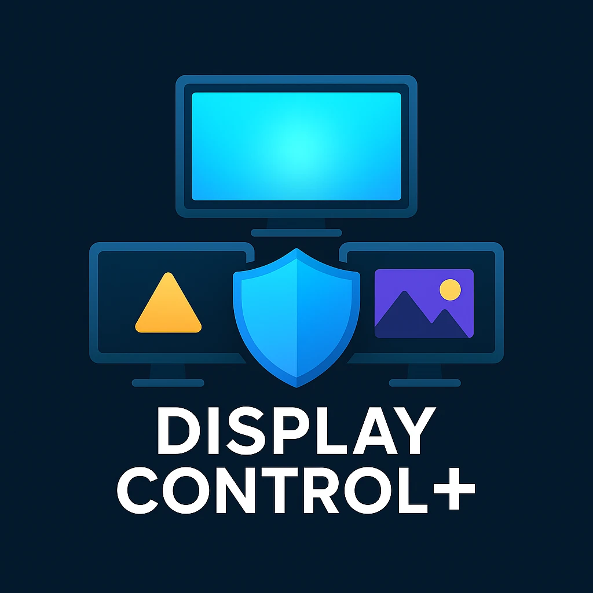
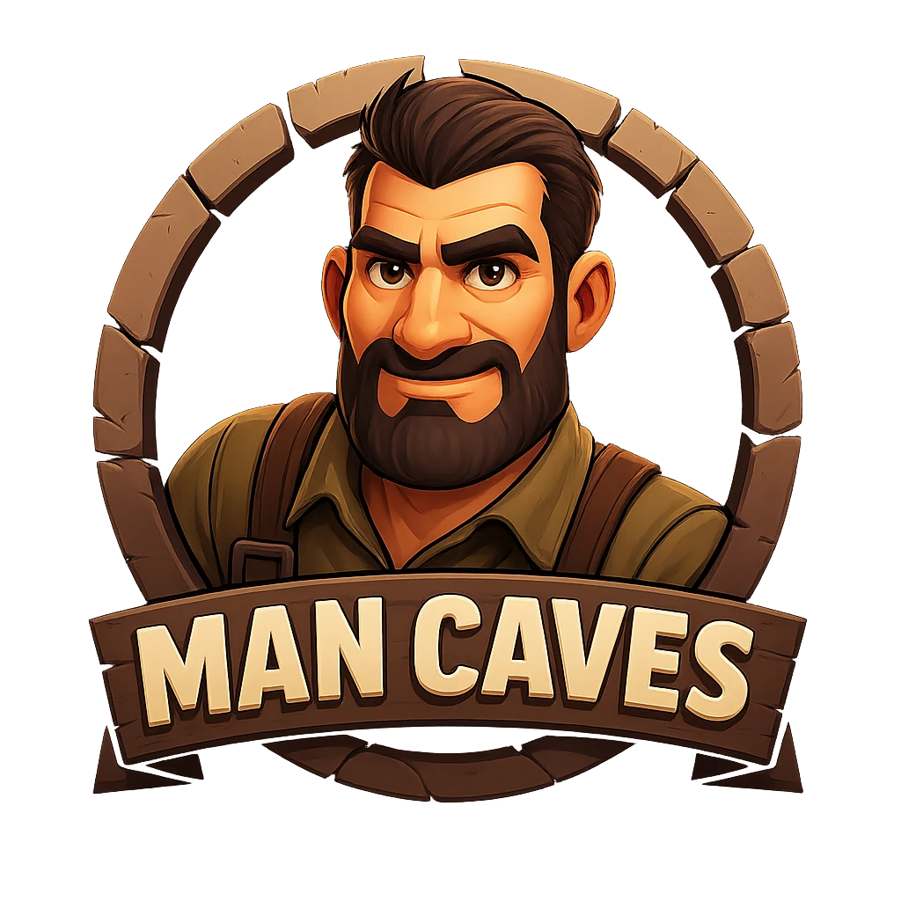
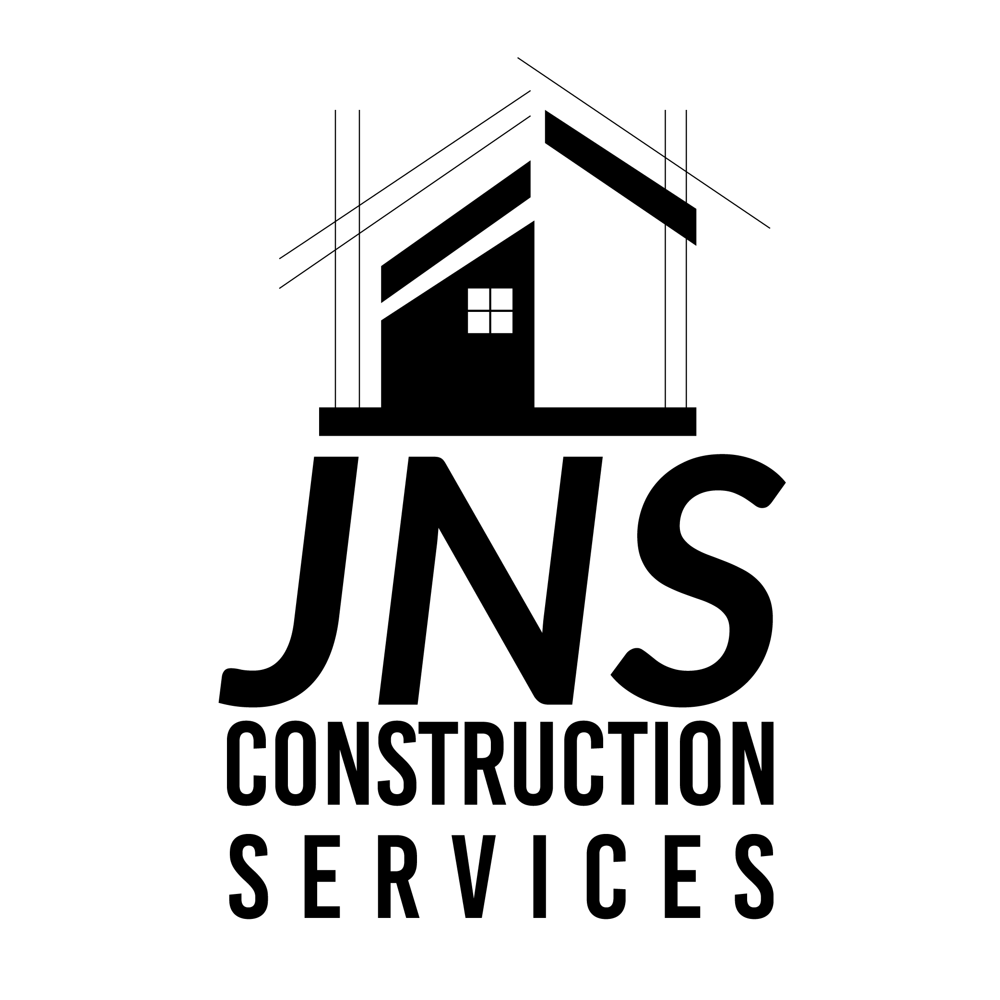
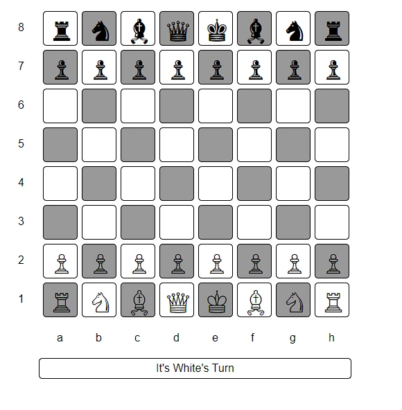
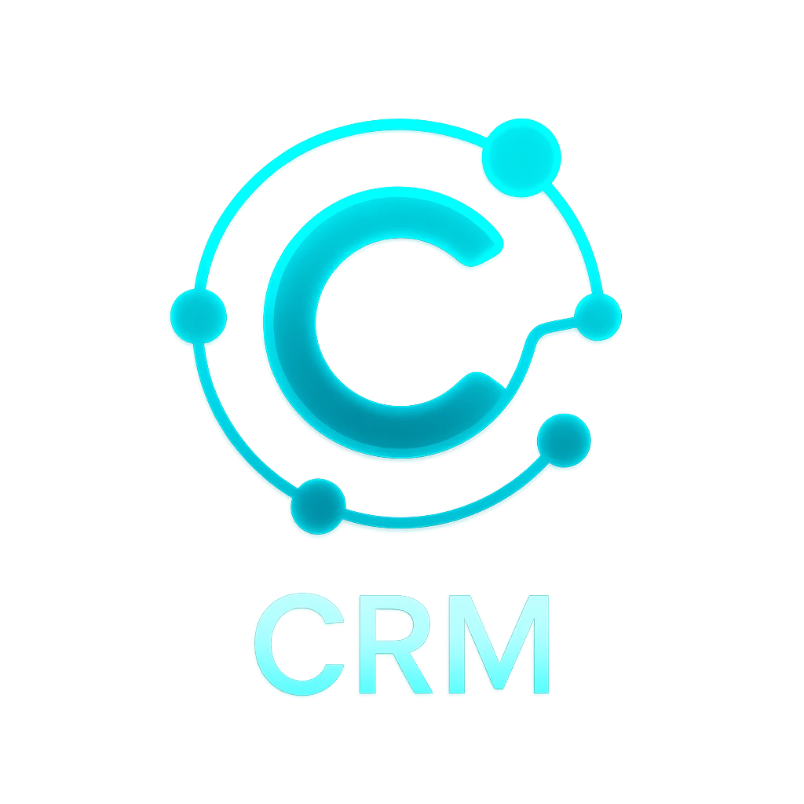
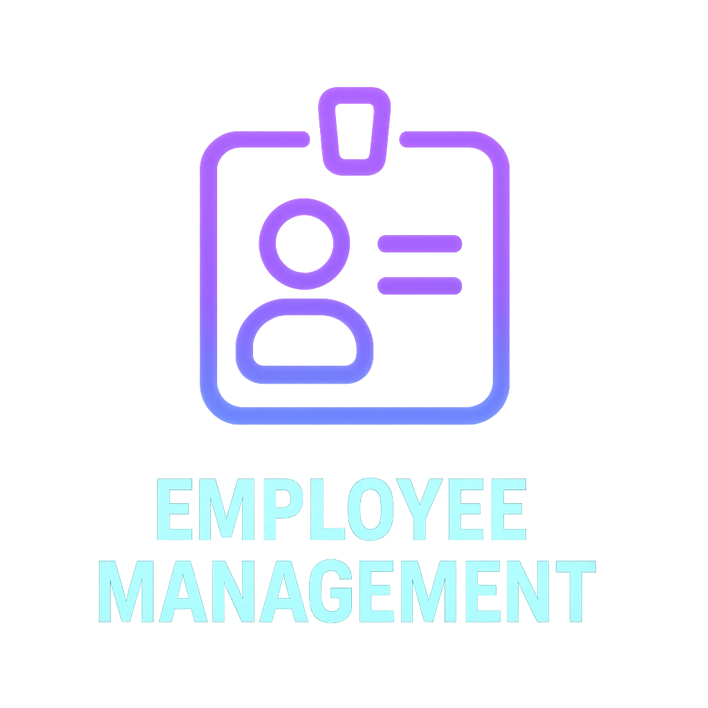
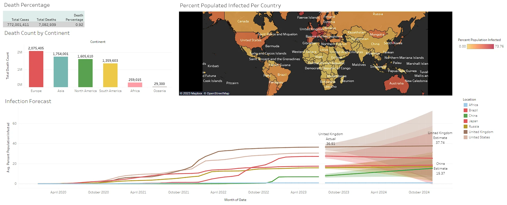

Software Projects & Portfolio
Showcase of custom websites, desktop applications, business automation systems, and AI-integrated tools built by Knight Logics.
Project Categories
Organized by technology domain and application area
PixelForge AI
Windows Video Upscaling And Restoration AppDesktop upscaling app with three AI engines (Real-ESRGAN, RealSR, Waifu2x) and RIFE GPU frame interpolation. Built around an ncnn-vulkan workflow with compare previews, ETA estimation, credit-based processing, and direct GitHub release updates. Requires a Vulkan-capable GPU.
What It Does
- Three upscaling engines: Real-ESRGAN (general), RealSR GPU (photo-realistic), Waifu2x GPU (anime/illustration)
- RIFE GPU interpolation: Real-time frame interpolation via ncnn-vulkan; minterpolate CPU available as fallback
- Practical validation: Before/after compare view with draggable separator
- Runtime awareness: Stage ETA estimation and hardware-aware timing guidance
Packaging
- Standalone Windows executable distributed through GitHub Releases
- Bundled runtime assets and direct in-app update support
Technology Stack

Auto-Video-Editor-and-Compiler — Highlight Reel Maker
Windows Desktop App for Clip CompilationsSmall, open-source Python app that turns a folder of short clips into a polished highlight compilation. It trims the last 5–30 seconds from each clip, prepends your intro, overlays background music, and exports one YouTube‑ready video using FFmpeg. Distributed as a standalone Windows executable with bundled FFmpeg and sample assets.
Core Workflow
- Auto-clip endings: Extract 5–30s from each selected video
- Intro + music: Prepend intro and overlay background track
- Compile output: Seamless final video ready for YouTube
- Portable build: Single .exe with required assets
Important Note
- The executable must run alongside the included folders (FFmpeg, intros, music, icons) in the same directory.
Technology Stack
VideoForge Studio (AutoTop5)
Windows Installer for Local Ranked Video GenerationProduction-oriented video tool that turns uploaded clips into polished Top 5 style exports. Distributed as a downloadable Windows package so each user runs the app locally and uses their own machine for FFmpeg rendering, captions, overlays, and optional narration workflows.
What Users Can Do
- Upload clips and captions: Build ranked videos from 3 to 10 source clips
- Customize output: Set title lines, fonts, dimensions, music mix, and intermission opacity
- Render locally: Use the user's own Windows machine for processing instead of a remote hosted server
- Launch in browser: Run the local app and work through a browser interface at `127.0.0.1:5050`
Deployment Model
- Ships as a self-contained Windows installer downloaded from GitHub Releases
- Exposed from Knight Logics as a product page with direct download and setup documentation
Technology Stack

Display Control Plus
Commercial Desktop ApplicationProfessional OLED screen protection utility with advanced idle detection and multi-monitor support. Built as a commercial Windows application with system-level integration.
Technical Architecture
- Multi-Process Design: GUI, background service, and system integration components
- Windows API Integration: Monitor enumeration, idle detection, Task Scheduler
- Advanced Overlay System: Multiple protection modes (blank, image, slideshow, GIF)
- Configuration Management: JSON-based settings with real-time updates
Key Features
- Per-monitor idle detection with configurable sensitivity
- PyInstaller-based distribution with Inno Setup installer
- System tray integration and Windows Task Scheduler automation
- Multi-monitor geometry handling and cursor tracking
Technology Stack

ManCaves.Store E-Commerce Platform
Automated Dropshipping SystemSnipcart-based dropshipping storefront prototype deployed on Vercel. Product catalog is JSON-driven with Firebase auth and a fully functional checkout flow. A CJ Dropshipping API integration suite was built to automate product imports and pricing sync — partially complete, not fully wired to production.
What's Built
- Storefront: JSON-driven product rendering across 9 collection category pages
- Checkout: Snipcart integration for real cart and payment processing
- Auth: Firebase email/password authentication and session state
- Automation scripts: CJ API product import, SEO description generation, live price sync
Status
- Storefront is functional and was live; CJ automation pipeline is built but product import to production was the remaining blocker

Knight Group Handyman Services LLC
Professional Handyman ServicesWebsite and online presence built for Knight Group Handyman Services LLC, a real operating handyman business. Built to establish credibility, generate client leads, and provide a professional point of contact for residential and commercial service inquiries.
What Was Built
- Business website: Service listings, contact intake, and brand presence
- Lead generation: Contact forms and calls-to-action for service inquiries
- Local SEO: On-page optimization for local search visibility
- Ongoing management: Site maintained while the business was actively operating
Technology Stack

JNS Construction Services
Business Website & Online PresenceProfessional website built for JNS Construction Services, a real operating general contracting business. Built to establish credibility, attract commercial and residential clients, and provide a professional digital presence.
What Was Built
- Business website: Service listings, project gallery, and brand identity
- Lead generation: Contact forms and calls-to-action for project inquiries
- Local SEO: On-page optimization for regional search visibility
- Mobile-first design: Responsive layout optimized for all devices
Technology Stack
JNS Construction Services
Business Website & Online PresenceProfessional website built for JNS Construction Services, a real operating general contracting business. Built to establish credibility, attract commercial and residential clients, and provide a professional digital presence.
What Was Built
- Business website: Service listings, project gallery, and brand identity
- Lead generation: Contact forms and calls-to-action for project inquiries
- Local SEO: On-page optimization for regional search visibility
- Mobile-first design: Responsive layout optimized for all devices
Technology Stack

Interactive Web Applications
Full-Stack Game DevelopmentCollection of sophisticated web-based applications featuring advanced game logic, AI opponents, and responsive design principles.
Chess Engine
- Complete Rule Implementation: Full chess rule validation including castling, en passant, and promotion
- Game State Management: Advanced position tracking and move history
- Interactive UI: Drag-and-drop interface with visual feedback
- Responsive Design: Cross-platform compatibility and mobile optimization
Tic-Tac-Toe AI
- Minimax algorithm implementation for optimal AI play
- Difficulty scaling and adaptive opponent strategies
- Clean, modern interface with smooth animations
- Win detection and game state persistence
Technology Stack

CRM Management System
Enterprise Customer Relationship ManagementInteractive front-end CRM demo built with HTML, CSS, and JavaScript. Data is stored in browser localStorage — not connected to a backend or live database. Demonstrates core CRM UI patterns including contact management, pipeline views, and analytics charts.
Features Demonstrated
- Contact management: Customer profiles with interaction log UI
- Lead pipeline: Stage tracking and conversion funnel visualization
- Task tracking: Follow-up reminders and task list UI
- Analytics dashboard: Charts and metrics rendered client-side with Chart.js

Employee Management System
HR & Workforce Management PlatformInteractive front-end HR management demo built with HTML, CSS, and JavaScript. Data persists in browser localStorage — not server-backed. Demonstrates core HR UI patterns including employee records, department views, leave tracking, and reporting layouts.
Features Demonstrated
- Employee records: Profile views with contact and role information
- Department structure: Team grouping and hierarchy display
- Leave tracking: Time-off request and status UI
- Reporting views: Summary dashboards rendered client-side

E-Commerce Management System
Complete Online Store ManagementInteractive front-end e-commerce administration demo using localStorage for data persistence. Not connected to a live store or payment system — demonstrates UI patterns for product management, order tracking, and store analytics displays.
Features Demonstrated
- Product management: Catalog UI with category filtering and variant display
- Order tracking: Order status views and fulfillment status UI
- Customer views: Profile and order history display
- Analytics: Sales and inventory charts rendered client-side with Chart.js
Project Management System
Enterprise Project & Task ManagementInteractive front-end project management demo. Data is stored in localStorage — no backend or database. Demonstrates UI patterns for task assignment, timeline views, milestone tracking, and project status reporting.
Features Demonstrated
- Task management: Assignment views with priority and status tracking
- Timeline display: Milestone and progress visualization
- Team views: Member assignment and workload display
- Reporting: Status summaries and completion charts rendered client-side

Advanced Data Analytics Platform
Business Intelligence & VisualizationComprehensive data analytics and visualization platform featuring advanced SQL analysis, interactive dashboards, and business intelligence reporting.
COVID-19 Analytics Dashboard
- Global Data Integration: Multi-source data aggregation and validation
- Interactive Visualizations: Dynamic charts with drill-down capabilities
- Trend Analysis: Statistical modeling and predictive analytics
- Real-time Updates: Automated data refresh and alert systems
SQL Analysis Engine
- Complex T-SQL queries with CTEs and window functions
- Advanced data mining and pattern recognition
- Performance optimization and query tuning
- Automated report generation and scheduling
Technology Stack
SPY Options Trading Bot
AI-Powered Financial SystemProfessional-grade options trading bot with AI signal generation, risk management, and live market integration. Features machine learning models for market prediction and automated execution.
AI & Machine Learning
- Signal Generation: Scikit-learn models with technical indicator analysis
- Risk Assessment: Real-time position monitoring and automated stops
- Adaptive Learning: Model retraining based on trade outcomes
- Market Analysis: RSI, MACD, VIX correlation, volume analysis
Trading Features
- Alpaca API integration for live options trading
- Multi-source data validation (yfinance, real-time feeds)
- Greeks monitoring and time decay management
- Emergency exit protocols and position limits
Technology Stack
Project Impact
Measurable results from automation and AI implementations
98% Automation Success
High-reliability systems with intelligent error handling
24/7 Operation
Continuous automated systems with minimal intervention
Real-Time Analytics
Live monitoring and intelligent decision making
Multi-Domain Expertise
AI, Finance, Gaming, Enterprise, and E-Commerce solutions
Commercial Grade
Production-ready applications with professional deployment
Scalable Architecture
Enterprise-level systems designed for growth and reliability
Ready to Automate Your Business?
Let's discuss how these technologies can transform your operations